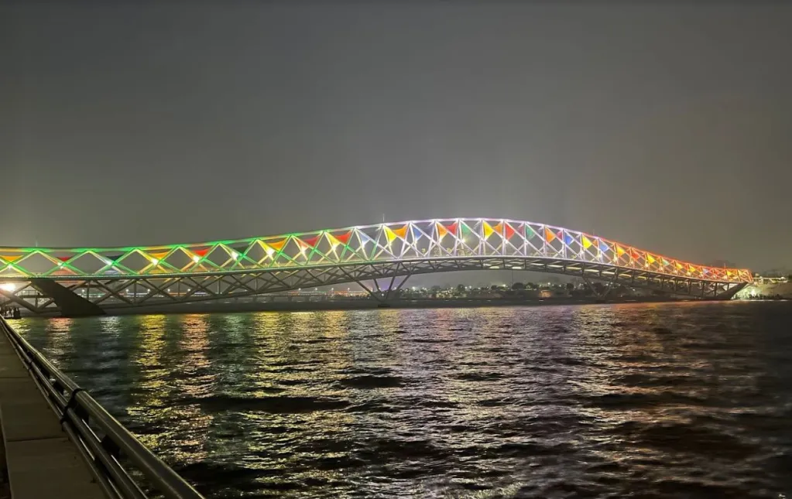

Why Ahmedabad is Called The Manchester of India
Manchester is an industrially advanced city of the United Kingdom, the history of which goes back to the 18th century, when industries in Great Britain took the world by storm with launch of the famous Industrial Revolution. Production moved out of the homes and little workshops of people into more organized factories where technology reached its pinnacle to invent great inventions such as James Hargreaves' spinning jenny, Richard Arkwright's water frame and Samuel Crompton's spinning mule. Among various technological innovations and industrial advancements, it was the cotton textile industry that particularly prospered. Cities like Manchester and Liverpool became famous as the major textile manufacturing hubs of the globe.
Located in Gujarat, Ahmedabad is popular as being the 'Manchester of India'. This owes
to the fact that it boasts of a rich heritage of producing some of the best cotton
fabrics of the world. But how did Ahmedabad get this title? How did it become the
'Manchester of India'? There's an interesting history behind it.
In the year 1780, the British made their first dent in the history of the Marathwada region by getting themselves embroiled in the domestic politics of the region. Taking advantage of the internal strife of the Maratha chiefs, they dived into the scene by participating in the First Anglo-Maratha War. One thing led to another and the British ended up getting a hold of Ahmedabad, which was on the banks of the Sabarmati River and could, therefore, serve as a port and ease the traffic of freight from Bombay.
In the year 1780, the British made their first dent in the history of the Marathwada region by getting themselves embroiled in the domestic politics of the region. Taking advantage of the internal strife of the Maratha chiefs, they dived into the scene by participating in the First Anglo-Maratha War. One thing led to another and the British ended up getting a hold of Ahmedabad, which was on the banks of the Sabarmati River and could, therefore, serve as a port and ease the traffic of freight from Bombay.

This was merely a small defeat as they eventually lost control. But this didn't
weaken the spirit of the British, who regained its control in 1818 during the Third
Anglo-Maratha War. This was imperative, since Ahmedabad could serve not only as a
major port, but also as a major manufacturing centre. Being endowed with sunshine
throughout the year, having black soil, the availability of plenty of capital with
rich merchants of Gujarat and the availability of plenty of cheap labor made
Ahmedabad the ideal destination to set up cotton mills. As earning profits and
filling their coffers was the soul motive, which lied at the heart of British
imperialism, British indulged in activities that would double their profits. Thus,
in 1864 they invested in the creation of the railway link between the Ahmedabad and
Bombay the major port of the country.
Thus, favourable economic, geographical and political conditions resulted in Ahmedabad becoming the
Manchester of India. Till date, the colourful tie and die fabrics, and clothes that are in great
demand not just in India, but also in global markets. This is why Ahmedabad is indubitably truly the
Manchester of India.